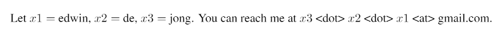

Twitter: @EdwinDdeJong
My publications
Contact:

Interests
Building new machine learning technology, machine learning, deep learning, representation learning, artificial intelligence, coevolutionary algorithms.Bio
My lifelong interest is in building new artificial intelligence technology with teams of highly motivated people. I studied at Delf University of Technology, did my PhD at the VUB AI Lab. I then went to Jordan Pollack's DEMO Lab as a Fulbright Scholar.I continued my work on machine learning research at Utrecht University, see my earlier UU page.
The impact of new technology is only realized when new ideas are turned into practice. In 2005 I therefore co-founded Adapticon, one of the earliest Deep Learning startups.
Since 2012 I'm at Quintiq, first leading the team that developed Quintiq's Demand Planner which forms part of Quintiq's S&OP solution, and currently, as of 2016, as Head of Predictive Analytics Technology.
Projects
MNIST stroke sequence data: all 70000 MNIST handwritten digit images transformed to stroke sequences that could have generated the skeletons of the strokesMNIST stroke sequence code to reproduce the MNIST stroke sequence data.